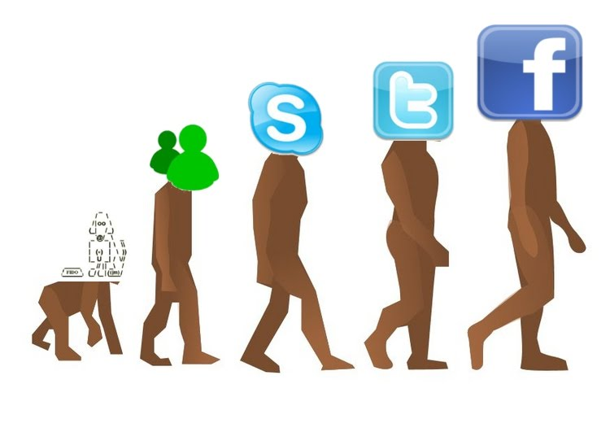

Origen de las Redes Sociales
El origen de las redes sociales en internet se remonta, al menos, a 1995, cuando Randy Conrads crea el sitio web classmates.com. Con esta red social se pretende que la gente pueda recuperar o mantener el contacto con antiguos compañeros del colegio, instituto, universidad,
En 2002 comienzan a aparecer sitios web promocionando las redes de círculos de amigos en línea cuando el término se empleaba para describir las relaciones en las comunidades virtuales, y se hizo popular en 2003 con la llegada de sitios tales como MySpace o Xing. Hay más de 200 sitios de redes sociales, aunque Friendster ha sido uno de los que mejor ha sabido emplear la técnica del círculo de amigos. La popularidad de estos sitios creció rápidamente y grandes compañías han entrado en el espacio de las redes sociales en Internet. Por ejemplo, Google lanzó Orkut el 22 de enero de 2004. Otros buscadores como KaZaZZ! y Yahoo crearon redes sociales en 2005.

Licenciatura en Sistemas Computacionales
© Copyright 2021. Juan Diego Juárez Vázquez